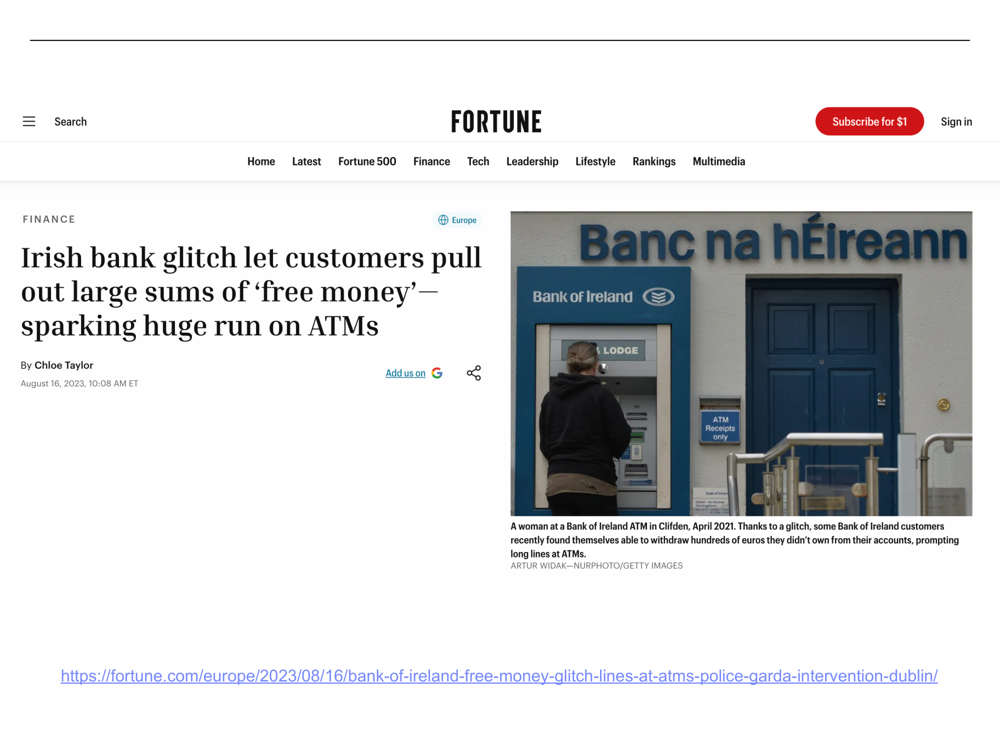
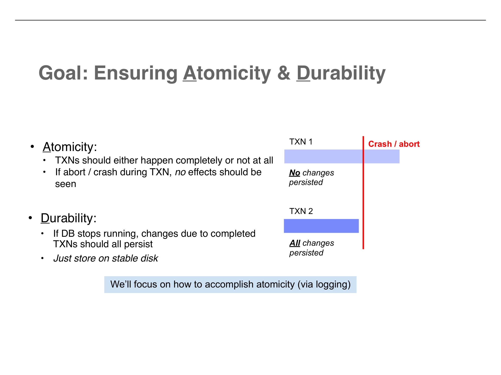
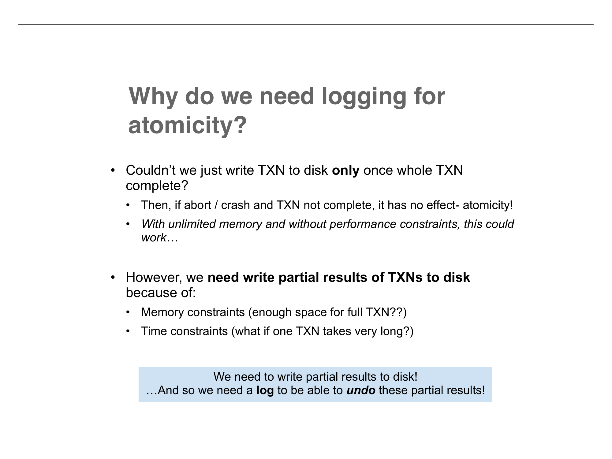
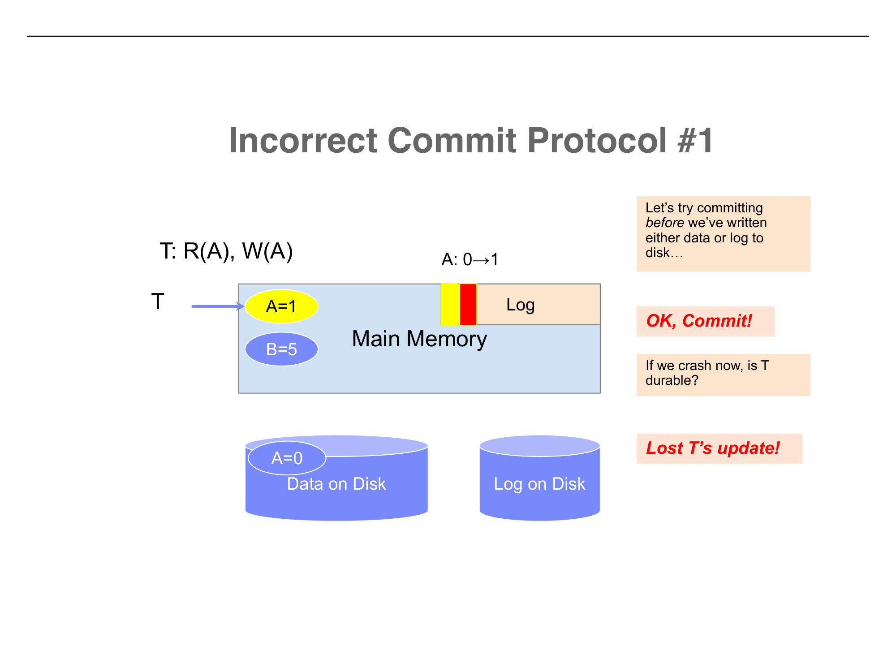
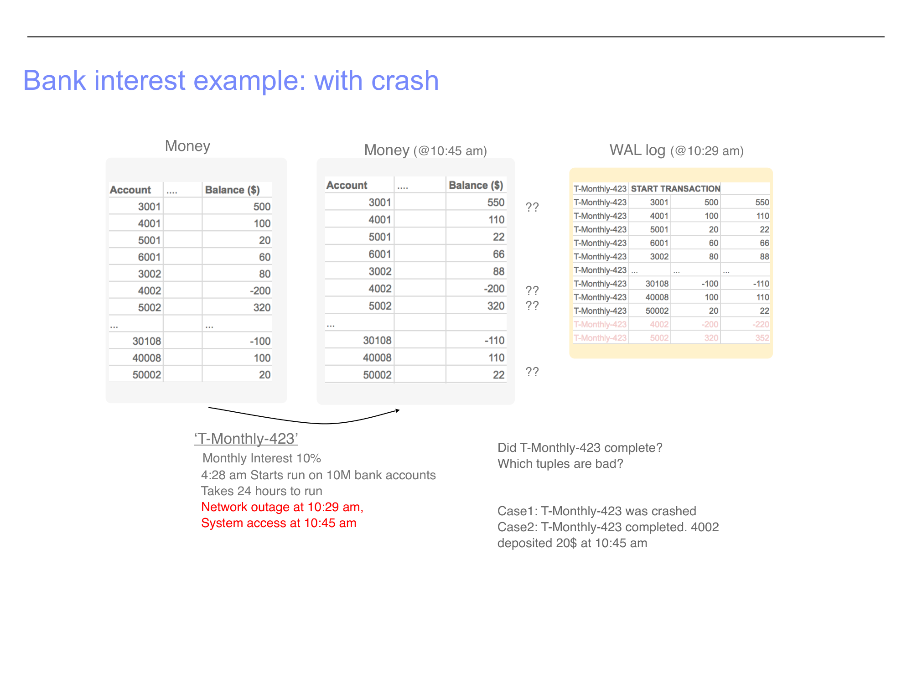
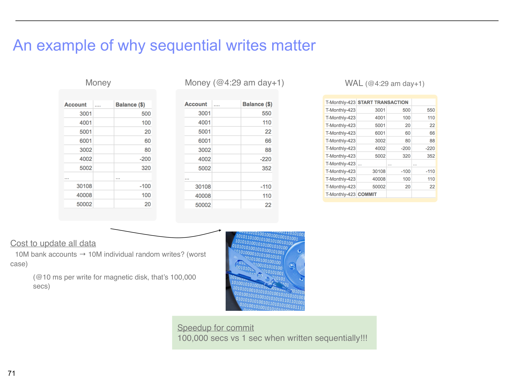

How databases survive crashes without losing data or corrupting state
Before diving into the mechanisms, the lecture makes an important practical observation: ACID is not universally provided. There has been — and continues to be — significant debate over whether full ACID guarantees are necessary or even desirable in all contexts.
This part of the lecture focuses on the A and D of ACID — Atomicity and Durability — and introduces the core mechanism that provides both: Write-Ahead Logging (WAL).
Transactions should either happen completely or not at all. If there is an abort or crash during a transaction, no effects should be seen.
Example: TXN 1 is in progress when a crash occurs. After recovery, none of TXN 1's changes are persisted — it is as if TXN 1 never started.
If the database stops running, changes due to completed transactions should all persist. Just store on stable disk.
Example: TXN 2 completed before the crash. After recovery, all of TXN 2's changes are still present.
The lecture focuses on how to accomplish atomicity via logging. Durability is conceptually simpler (write to disk), but the two are deeply intertwined because the logging mechanism that enables atomicity also enables durability.
Database tables themselves have no notion of history. Once you overwrite a value, the old value is gone. So we introduce a notion of history using a log.
<TransactionID, location, old data, new data>. This is sufficient to undo any transaction.
Key properties of the log:

Consider a transaction T that reads A (currently 0) and writes A = 1:
When T writes A = 1, two things happen in main memory:
<Tid, &A, 0, 1> — meaning "transaction Tid changed A at address &A from 0 to 1"At this point, both the updated data and the log record exist only in main memory. The disk still has A = 0 and an empty log. If the system crashes now, everything in memory is lost — but since nothing was committed, that is fine (atomicity is preserved trivially).
In theory, if we never wrote partial results to disk, atomicity would be trivial — a crash would simply lose all in-progress work. But this does not work in practice:
We need to write partial results of transactions to disk. And so we need a log to be able to undo those partial results if the transaction does not complete.
The critical question is: in what order do we write things to disk? The WAL protocol defines a precise ordering that guarantees both atomicity and durability.
A transaction is committed once its COMMIT record is on stable storage.

The key insight is that the log is written to disk before the data — hence "write-ahead" logging. This means:
To understand why WAL works, it is instructive to see what goes wrong with other approaches. The lecture walks through two incorrect commit protocols:
Commit before writing either data or log to disk. The data (A=1) and log exist only in memory.
Problem: If we crash now, both the data and the log are lost. The transaction was "committed" but its effects have vanished.
Result: Lost T's update! Durability is violated.
Write data to disk (A=1 on disk), commit, but do not write the log to disk.
Problem: The data is durable — A=1 survives a crash. But the log is lost, so after recovery, we have no record of whether T committed or was still in progress.
Result: How do we know whether T was committed?? We cannot distinguish a completed transaction from a half-finished one that needs to be rolled back.

WAL avoids both problems by committing after writing the log to disk but potentially before writing the data to disk. The log on disk serves as the authoritative record of what happened:
The lecture brings back the monthly interest example from Part 5 to show WAL in action with a realistic scenario.
The WAL records every single update as the transaction processes accounts:
T-Monthly-423 START TRANSACTIONT-Monthly-423, 3001, 500, 550 (Account 3001: $500 → $550)T-Monthly-423, 4001, 100, 110 (Account 4001: $100 → $110)T-Monthly-423, 50002, 20, 22 (Account 50002: $20 → $22)T-Monthly-423 COMMITThe COMMIT record at the end confirms the transaction completed successfully. All changes are durable.

Now suppose a network outage occurs at 10:29 AM — about 6 hours into the 24-hour transaction. The WAL on disk has update records for accounts processed so far, but no COMMIT record (because the transaction did not finish).
When the system comes back at 10:45 AM, the data on disk is in a messy state. Some accounts have their interest (3001 = $550), others do not (50002 = $22). Even worse, some accounts might have been modified by other transactions during the outage window.
Without the WAL, we would have no idea which accounts were updated by T-Monthly-423 and which were not. But the WAL tells us exactly: the log contains update records for every change T-Monthly-423 made, and since there is no COMMIT record, all of those changes must be undone.
Scan the WAL for transactions that have a START but no COMMIT. For each such transaction, use the "old data" values in the log records to restore every modified item to its original value. Account 3001 goes back to $500, Account 4001 goes back to $100, and so on. Notify developers about the aborted transaction.
For any transaction that does have a COMMIT record in the log, use the "new data" values to ensure all changes made it to the data on disk. (The data might already be correct, but this step guarantees it.)
After undo and redo, the database is back in a consistent state. The monthly interest transaction can be re-run from scratch.

WAL is not just about correctness — it also provides a significant performance advantage.
Consider the monthly interest transaction updating 10 million bank accounts. Writing 10M individual updates to random disk locations takes approximately 10M × 10ms = 100,000 seconds (~28 hours) on a magnetic disk.
But writing 10M sequential log records to the WAL? That takes approximately 1 second. The data pages can then be flushed lazily in the background. The commit itself only requires the sequential WAL write to complete — a 100,000x speedup for the commit operation.

Sequential writes are critically important for both flash storage (SSDs) and magnetic disks, for different reasons. On magnetic disks, sequential access avoids costly seek times. On SSDs, sequential writes align with the erase-block structure and reduce write amplification. Future lectures will explore the underlying storage physics in detail.
<TxnID, location, old data, new data> for every update, providing enough information to undo or redo any transaction.